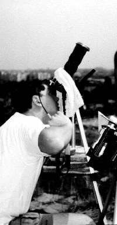
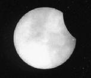
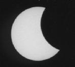
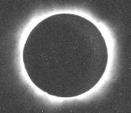
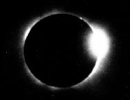
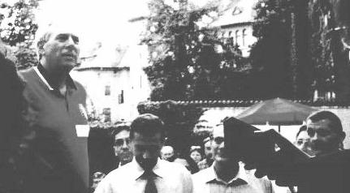

SJAA
Ephemeris
SJAA Ephemeris |
Centerline through BucharestDaniel Stefanescu |
Honestly, I could hardly wait to see this eclipse. For over three years, since my last visit with family in Bucharest, the capital city of Romania, I had known and in fact anticipated the passing of the lunar umbra over the very place I had called home during my childhood. Indeed, calculations had placed the centerline within about a quarter mile south of the apartment building.
 With two days to go, fanned in part by media fervor, the excitement was becoming apparent throughout Bucharest. One could find eclipse glasses virtually spilling onto the ground from boulevard kiosks and bazaar tables, yet pins, cups and t-shirts were surprisingly scarce. In retrospect, I suppose that the economic hardships of Romania made such souvenirs prohibitive for most people. I also found foreigners to be almost nonexistent within Bucharest itself. That was until I learned that most international eclipse chasers had camped-out 80 miles to the west of the city by the town of Rimnicu Vilcea, the place of greatest eclipse duration. An exception was the opera tenor, Luciano Pavarotti, who was to remain in Bucharest to view the eclipse by day and to serenade a sold-out crowd by night.
With one day to go, I had decided to tie up loose ends regarding my equipment and observing site. I had chosen to view the eclipse from the top of our twelve-story apartment building for as much pictorial as sentimental reasons. I feel that witnessing an astronomical event of such intensity from familiar surroundings would add so much to the experience. Some of the activities that I had planned include: recording the temperature drop between first and second contact and changes in wind intensity and direction; photograph the partial phases, totality, pinhole crescents; and observe shadow bands, bright stars and the inferior planets; and oh yeah, actually to look at it too. Months before, experienced observers warned me not to do too many things: "you'll forget to see it!" they said.
 With an hour to first contact, a crowd of family, friends and neighbors started to appear around me. A grill was lit on the lower terrace and soda and beer started to flow generously. I supposed that word had spread that I was up there and that I knew what was happening. Not really, I had only read or heard from others what to look for and what to expect from a total eclipse. Nevertheless, I felt pretty confident. After all, I had in my possession two premium eclipse glasses, three #14 welding filter plates: two for visual observation and one for my 7x20 Nikon binoculars, a Sony digital video (DV) camera fitted with a small welding-type glass filter from a department-store refractor and with a 2x tele-extender that had yielded 40x, my 35mm Nikon with its 400mm lens covered by an 80mm Thousand Oaks Type 1 glass filter, and another Sony video camera (Hi8), left with its exposure setting in a fixed position and situated to record ourselves throughout the eclipse. In addition, I brought an eclipse ephemeris by NASA's Fred Espenak with the exact lunar transit timed for Bucharest and a watch synchronized to the UT. For a qualitative wind measurement I fashioned a small, yellow foam ball with a five-foot fishing line and tied it to a roof antenna element in clear view of the Hi8 video camera. For recording temperature fluctuations, I used a room thermometer carefully wrapped in reflective paper placed in the relative shade of the Hi8 video camera.
 With less than 30 minutes before first contact, I discovered a camera instability when viewing the sun's disk through the 35mm Nikon. It seemed the weight of camera was not sufficient to dampen vibrations caused by sporadic winds. I then loaded its tripod with about 20 pounds of concrete roofing plates previously loosened by heavy winters. Now, come what may, I felt ready!
With first contact now imminent, I found it difficult to believe how synchronized the clouds were with the advancing penumbral edge. Just after 12:41 p.m., I confirmed first contact at my location. Looking at the little bite through tenuous clouds made my heart sink a little. I photographed the lunar progression every ten minutes. As the air cooled and contracted with increasing rapidity, a remarkable change in air movement was felt. The wind direction was now directed toward the advancing darkness as it rushed past us in a strong, laminar flow. All agreed that the breeze was quite revitalizing. After all, we had endured 100F temperatures since noon.

The sun's crescent had gradually decreased to less than 5%; an eerie yet pleasing effect occurred-one might compare it to a dark storm cloud passing in front of the sun, yet instead of dissolving, if you can imagine, all shadows retain a razor-sharp quality. Shadows of buildings, people and things had become so sharp and distinct that the entire scene took on a surrealistic appearance. Thin clouds remained on the scene, but a reassuring opening had lingered around the sun for quite some time. By then, the temperature had dropped by 20 degrees since first contact; it felt really good.

I could sense my pulse rate climbing as the remaining rays of sunlight trickled past the moon's eastern limb. "Mai sunt zece secunde!" (Ten seconds left!), I shouted. Already, I had a feeling that I was missing it for some reason. It was too quiet, too fast, and too smooth to be real! Suddenly, Baily's beads appeared. Like distant welding arcs, they lit up the thin clouds with their bluish-white brilliance. Then, within two seconds, they merged to form the first diamond ring. For an instant, the diamond increased in brightness due to heightened contrast with the darkened sky. Three, two, one! Wow, Totality! I tried to give special attention to the visual extent and structure of the sun's coronal streamers as well as to its numerous prominences. The inner corona was bluish-white and was punctuated by small crimson nodes. A half of a solar radius beyond, most of the gossamer streamers was obscured by haze. I was fascinated by the change in light of the inner corona as it was occulted first by the trailing edge and then by the leading edge of the moon. I was also moved by the unusual look of Bucharest at this time. Streetlights turned on as did the large neon billboards, which were affixed to buildings just south of the centerline.
That evening, as an addendum to a glorious spectacle, the U.S. ambassador to Romania extended an invitation to American citizens to his residence in commemoration of this great event. Present were astronomers of the Romanian Academy Astronomical Institute including Dr. Magda Stavinschi with whom I had previously conversed. In addition, a Romanian cosmonaut who had flown on a space shuttle mission accompanied Dan Goldin, NASA's principal director. After meeting with the hoards of American tourists and fellow astro-nerds, Dan gave a brief speech describing present missions and future space telescope projects. His presence was made even more remarkable by his declaration of having significant Romanian ancestry.
The remainder of my stay in Romania included visiting with family as well as more sight-seeing in Bucharest and a trip to the ancient port city of Constanza by the Black Sea.

| Daniel Stefanescu; last updated: February 05, 2002 | Prev Next |